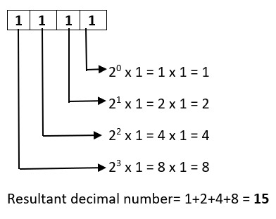

Binary to decimal conversion
To convert a binary number to its decimal equuivalent:
- Start with the given binary number.
- Write down the binary digits from right to left, assigning powers of 2 to each digit position.
- Evaluate the powers of 2 for each digit position.
- Multiply the respective digit by its corresponding power of 2.
- Sum up the results obtained in the previous step to get the decimal equivalent.
example:
Octal to decimal conversion
To convert a octal number to its decimal equivalent:
- Start with the given octal number.
- Write down the octal digits from right to left, assigning powers of 8 to each digit position.
- Evaluate the powers of 8 for each digit position.
- Multiply the respective digit by its corresponding power of 8.
- Sum up the results obtained in the previous step to get the decimal equivalent.
Example: Octal number: 67
(6 * 8^1) + (7 * 8^0).
8^1 = 8 and 8^0 = 1.
(6 * 8) + (7 * 1) = 48 + 7 = 55. Decimal number: 55
Hexadecimal to decimal conversion
To convert a Hexadecimal number to its decimal equivalent:
- Start with the given hexadecimal number.
- Write down the hexadecimal digits from right to left, assigning powers of 16 to each digit position.
- Convert any hexadecimal letters (A-F) to their decimal equivalents.
- Evaluate the powers of 16 for each digit position
- Multiply the respective digit (including converted letters) by its corresponding power of 16.
Example: Hexadecimal number 2B6
(2 * 16^2) + (B * 16^1) + (6 * 16^0).
16^2 = 256, 16^1 = 16, and 16^0 = 1.
(2 * 256) + (11 * 16) + (6 * 1) = 512 + 176 + 6 = 694.Decimal number: 694